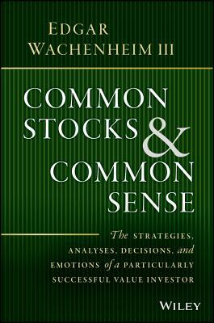

1937年出生的艾德加·瓦肯海姆三世（Edgar Wachenheim III）在麻省理工学院读了两年后转入威廉姆斯学院（Williams College），1959年毕业，后赴哈佛商学院攻读MBA，1966年毕业。1969年，他加入岳家家族企业Central National-Gottesman（CNG）旗下的投资部门，师从阿瑟·罗斯（Arthur Ross）；1979年罗斯退休后，瓦肯海姆接掌该部门。1987年，这个投资部门独立为Greenhaven Associates，瓦肯海姆出任创始人、董事长兼首席执行官。公司成立初期只管理CNG与瓦肯海姆家族自有资金，后来才逐步接受富裕家族、大学捐赠基金等外部客户。据CNBC披露，1988年至2017年，Greenhaven的组合年化收益率（费前）接近19%，公司管理规模到2025年已超过100亿美元。瓦肯海姆本人长期担任斯基德莫尔学院（Skidmore College）荣誉校董，他与妻子苏（Sue Wachenheim）设立的基金会也长年资助母校威廉姆斯学院；2018年他还受邀出席CNBC的Delivering Alpha论坛谈自己的选股方法。
《怎样用常识做股票》英文原名Common Stocks and Common Sense，2016年由Wiley出版，2022年推出修订版第二版，新增了对通用汽车（General Motors）与电动车行业的分析。全书没有采用教科书式的条框，而是选取IBM、Interstate Bakeries、U.S. Home Corporation、森泰克斯（Centex）、联合太平洋铁路（Union Pacific）、美国国际集团（AIG）、劳氏（Lowe's）、惠而浦（Whirlpool）、波音（Boeing）、西南航空（Southwest Airlines）、高盛（Goldman Sachs）共十一个Greenhaven实际持有过的真实案例，逐笔还原买入前的调研、买入逻辑与后续走向。瓦肯海姆把自己的方法归纳为几个动作：先测算一家公司在未来两到三年正常经营状况下能赚多少钱，再用一个合理倍数——他常以标普500指数六十五年平均市盈率约16.5倍作为普通公司的参照——去估算目标价；只有当目标价意味着三到四年内本金有翻倍潜力时，才构成足够的安全边际；最后还要有一个“变异认知”（variant perception），即一个经得起推敲、能解释市场为何定价错误的独特论点。谈到惠而浦一案时他写道，这笔投资“无论股价是15倍市盈率、12倍还是10倍市盈率，都会是一笔令人兴奋的投资”（would be an exciting investment regardless of whether shares were worth 15 times earnings or 12 times earnings or even 10 times earnings），说明他更看重方向性的安全边际，而非精确估值。他也不回避失败：AIG一案买入后公司出事，他形容这笔投资“我上床时还是选美皇后，醒来时已经变成女巫”（I went to bed with Miss America and woke up with a witch）。他在书中还给出过一段组合层面的算术：“如果我们持仓中五分之一的仓位能在三年内涨到三倍，那么其余四只持仓只需要达到12%的年化回报”（If one in five of our holdings triples in value over a three-year period, then the other four holdings only have to achieve 12 percent average annual returns），用来说明为什么少数几笔重仓的判断远比分散押注更能决定长期收益。
财经书评人布伦达·朱宾（Brenda Jubin）在书评中称此书“一本令人愉悦的书”（a delightful book）、“让人手不释卷”（a page turner），认为它兼具回忆录、案例研究与投资建议三重性质。中文版《怎样用常识做股票》由张玉新翻译，中国青年出版社2023年9月出版。
这本书的价值不在于提供选股公式，而在于把瓦肯海姆四十年间真实下注的十一次决策原样摊开，包括判断对了什么、判断错了什么、以及AIG这样中途翻车的仓位是怎么被处理的。他反复强调Greenhaven几乎不做宏观预测，也不理会短期或相对排名的表现压力，持仓周期通常是三到四年，这与很多依赖季度业绩的基金经理形成对照。对照惠而浦、劳氏这类周期性制造业和零售业公司的分析过程，读者能看到“预测两三年后的正常盈利、给一个不苛求精确的合理倍数、要求足够的翻倍空间”这套方法如何在真实持仓中被反复使用，而不是停留在概念层面。书中对波音、西南航空、联合太平洋铁路等重资产、强周期性行业的分析，也具体展示了他如何在同一套框架下处理不同行业的估值差异，而非套用单一模板。